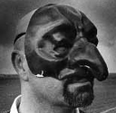
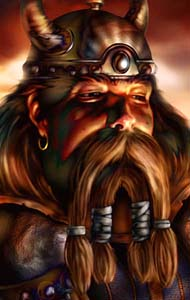

Forums galactiques > Taverne galactique : lieu de discussion informel > Le quartier des Miroires
Pages : 1
| Sahred Del'Bashir Réputation à la taverne : 45  30/08 ETU 18:06 | Score : 2 Détails Voici le quartier des ambassades.
Appelé quartier des Miroires, car constitué majoritairement de grand bulding de verres. Il surplombe les autres quartiers environnant, et l'on dit que la lumière qui atteind parfois le quartier des bas-bond est une lumière indirecte réfléchie par les tours du quartiers des Miroires. Ici c'est le royaumes des intrigues de cour et des espions, ou les mots on plus de poid qu'une arme, et où dans la calme feutré de restaurants chic, se nouent et se dénouent les alliences entre nations. | ||
| Sahred Del'Bashir Réputation à la taverne : 45 30/08 ETU 18:15 | Score : 0 Détails 01. Bureau de la Délégation des Sages de Parmenion.
Sahred Del’Bashir était immobile comme une statue, regardant par les vitres de son bureau des astronefs de transport, volés au dessus de la ville. La pièce était plongée dans une torpeur de fin d’après midi, que seul quelques poissons globe, dans un aquarium hors de prix, troublaient de leurs battements de nageoires. Sahred Del'Bashir attendait seul, son mystérieux rendez-vous qui tardait à arriver. (a vous de jouer, qui est ce mystérieux rendez-vous et pourquoi veut il rencontré Sahred, à vous de me l'écrire) | ||
| Lewllyn Réputation à la taverne : 192  30/08 ETU 19:01 | Score : 1 Détails Un homme frappe à la porte un coup fort. L'homme est de petite taille, 1.65m environ, pour un poids d'à peu près 60 kilos. Il ne paye pas de mine, mais semble terriblemennt sur de lui.
Il attend une réponse pour entrer, mais n'entend rien. Il fappre plus fort, et une voix réponds: "Entrez!" L'homme s'éxecute, ouvre la porte et la referme prestement. Il s'avance jusqu'au bureau qui lui fais face et se présente. "Bonjour! Je suis Frozen Enys, représentant de la AngelCorp. Mon patron a demandé ce rendez-vous pour vous parler du projet de rachat entre la AngelCorp est votre groupe aérospatial." Sahred semblait perplexe. Vous vous rappelez??? Le projet de rachat??" | ||
| Sahred Del'Bashir Réputation à la taverne : 45 30/08 ETU 19:19 | Score : 2 Détails Sahred regarda le petit humanoïde en silence pendant plusieurs secondes. Il aimait lire le visage de ses interlocuteurs, qui étaient bien souvant plus explicite que leurs paroles.
Il décida se s'assoir ensuite, et montra un fauteuil à l'envoyé de l'AngelCorp. Je me souviens effectivement d'un holo que votre compagnie m'a envoyé, il a de cela plusieurs semaines. Nous avons mené notre petit enquête, et nous avons pu nous rendre compte que l'AngelCorp avait des contactes avec l'armée d'une des nations en guerre en ce moment. Nous n'avons pas donné suite à votre demande, car notre groupe aérospatial n'est pas à vendre pour les marcands d'armes. A présent, j'ai peut être été mal informé... | ||
| Lewllyn Réputation à la taverne : 192 30/08 ETU 19:31 | Score : 0 Détails Cet homme avait u nregard inquisiteur, mais l'envoyé d'AngelCorp avait été formé pour ne laisser paraitre aucunes émotions. Il s'assit quand Sahred lui demanda, pusi répondit:
"Oh ,ça??? C'est une vulgaire tentative de la MansDeCorp pour plomber nos relations. Je peux vous assurer que nous n'avons rien vendu à quelques groupes plus ou moins illicites et révolutionnaires que se soit. Je disais donc, mon patron m'a envoyé pour vous faire une offre d'achat de votre groupe aérosaptaiel, qui est en perte de vitesse depuis quelques temps. La valeur de ses actions a chutée de 61.35% cete semaine, et nous avons une offre à vous faire. Nous rachetons votre groupe pour 1.21 Ma de leems, soit 10% que sa valeur actuelle." L'employé s'interrompit, et regarda rapidement tous les recoins du bureau. Il y a avait deux caméras dans les angles derrière le bureau, et fort à parier qu'une alarme se trouvait celui-ci. | ||
| Sahred Del'Bashir Réputation à la taverne : 45 30/08 ETU 20:11 | Score : 0 Détails L'envoyé de l'AngelCorp savait bien cacher ses sentiments, pourtant ses yeux n'arrêtaient pas de parcourir la pièce... comme s'il cherchait quelque chose.
Discrètement Sahred raprocha sa main du bouton d'appel de sécuritée, la prudence étant toujours mère de sûreté. je vous remercie de l'intêret que vous portez à notre groupe, et croyez que nous porterons toute l'attention nécessaire à cette proposition... Pourtant laissez moi vous posez une question, comment se fait il que l'AngelCorp s'intéresse à ce point à nous, elle n'a pas la réputation de sauver les entreprises en "perdition". De plus la bourse est très fluctuante, surtout en cas de guerre, aujourd'hui nos actions sont basses, demain la tendance sera peut être inversée... | ||
| Lewllyn Réputation à la taverne : 192 30/08 ETU 20:38 | Score : 0 Détails "Oui, nous avons la réputation d'être des requins. Mais ce n'est pas vrai.. Du moins, en partie.
Simplement, nous vous faisons cette offre, en cash. Cela permettra surement à votre compagnie de renouer avec son glorieux passé." A cet instant, Frozen remarqua que Sahred avait subrepticment déplacé son bras vers le coin du bureau. "Une alarme, j'en étais sur" se dit l'homme. Il fit comme si de rien n'était et poursuiuvit. "Vous savez, vous n'êtes pas en position de force. Je ne dis pas ça pour vous forcer la main, mais votre groupe sombre de plus en plus et à moins d'un énorme et incompréhensible changment de situation, vous allez être obligé de déposer le bilan. Alors qu'avec la publicité créées par son absorption dans notre entreprise, vous pourriez sauver beaucoup d'emplois. Vous pouvez si vous le désirez garder un certain pourcentage d'actions, mais rien qui n'excède la minorité de blocage." | ||
| Sahred Del'Bashir Réputation à la taverne : 45 30/08 ETU 21:53 | Score : 0 Détails Votre offre est intéressant, mais comme vous le savez, je ne suis qu'un ambassadeur.
Le groupe d'areospatial auquel vous faite allusion appartient aux Sages de Parmenion. je leurs transmettrait votre offre et ils prendront contacte avec vous s'il le désire. je ne peux moi même prendre aucune décisions commerciales. Autre chose ? | ||
| Dantès Réputation à la taverne : 149  30/08 ETU 23:01 | Score : 1 Détails L'homme dissimulé dans la penderie attendit que le petit homme d'Angel Corp ait quitté la pièce pour sortir de sa cachette. Même Sarhed ne le savait pas caché ici. Il avait attendu deux heures à l'insu de tous, attendant le moment opportun.
"Le bonjour à vous messire. C'est bien impoli de ma part de m'introduire ici de cette manière, alors laissez moi l'opportunité de me rattraper en me présentant.Il fit une immense révérence, témoignant de son excentricité.Svart Alfar, ambassadeur d'une compagnie qui ne juge pas nécessaire que vous connaissiez son nom dès à présent. Vous avez des problèmes de bourse? Des rapaces tels qu'AngelCorps vous tournent autours? Je ne suis pas de ce genre de rapace, autant vous le dire tout de suite. Pas d'ambiguité entre nous, nous sommes fait pour nous entendre, et ma compagnie nous veut alliés commerciales. Vous êtes en difficulté financière, alors expliquez moi tout vos problèmes et je vous direz dans quelles mesures nous pourrons vous aider, sans RIEN demander en répartie. Il sourit légérement en prononçant ces derniers mots. Il s'assit sans y avoir été invité, croisa les jambes, saisit un stylo sorti de nul part et un bloc note et attendit. Après un petit temps d'arrêt, il murmura. Soyez en persuadé, nous poursuivons des intêrets communs... | ||
| Sahred Del'Bashir Réputation à la taverne : 45 30/08 ETU 23:46 | Score : 0 Détails Sahred resta de nombreuses minutes silencieux.
Comment prendre l'intrusion de cet homme ? Une chose était sur, la sécurité du batiment laissait à désiré. Il allait devoir changer de bureau, il en prendrait un avec des caméras et un système de survaillance qui marche... MansDeCorp la compagnie qui lui louait cet endroit c'était clairement fichu de lui. Portant son attention vers son nouvel interlocuteur, il lui sourit calmement. Mr...Alfar, c'est bien ça. Si vous aviez correctement écouté aux portes, vous auriez certainement entendus que je n'ai, personellement, pas de problème d'argent. Mr. Frozen Enys faisait effectivement référence à une compagnie appartenent au gouvernement des Sages de Parmenion, ayant des difficultés finencières. Heureusement pour mon gouvernement, il ne possède pas une seul compagnie, et même si la faillite de la compagnie en question est ennuyeuse, mon gouvernement, sera faire face. A présent je n'ai pu m'empêcher de remarquer la facilité avec laquel vous vous êtes introduit dans mon bureau. Votre société emploi des personnes ayant bien des talents. Peut être que je pourrais en avoir besoin. En effet j'aimerais savoir pourquoi AngelCorp s'interesse autant à notre compagnie aérospatial. Et pour en connaître la raison, mon gouvernement sera très certainement près à payer un bon prix. Qu'en dite vous ? (Dantès, à toi de résoudre ce mystère avec Lewllyn) | ||
| Dantès Réputation à la taverne : 149 30/08 ETU 23:55 | Score : 0 Détails Svart, qui souriait à pleine dents, était insondable pour Sarhed. A quoi pensait cet excentrique jeune homme? Ce dernier se leva en répondant.
J'entend ce que je veux entendre très cher. Cette compagnie qui a des problèmes financiers ne serait que la premier contact entre votre gouvernement et mes employeurs, le premier contact d'une longue et profitable "amitié" commerciale..et autres... Vous aurez ces informations sur AngelCorp, et on ne vous demandera rien en échange, en gage de notre bonne foi. Svart sourit intérieurement, car ces informations ils les avaient déjà, mais ils préférait laisser patienter Sarhed. Il se plongea dans une autre révérene extravagante, et sorti tel un prince. | ||
| Lewllyn Réputation à la taverne : 192 31/08 ETU 10:58 | Score : 0 Détails Décidément, cet homme semblait assez sur de lui. Mieux valait sortir, et le laissait mariner un peu. Frozen attendait patiemment dans la salle d'attente, non sans avoir vérifié les positionnements des caméras. Une dans chque angle, qui l'observaient attentivment.
La secrétaire semblait beaucoup plus préoccupé par son vernis à ongles que par ses dossiers. Le jeune homme choisit cet instant pour passer à l'action. Il glissa sa main dans une poche de son veston, et appuya sur un objet cylindrique. Aussitôt, le courant fût couper dans tout l'immeuble. Décidément, cet I.E.M. était des plus efficaces. Maintenant que les caméras de surveillance étaient neutralisées pour un petit quart d'heure, il ne restait plsu qu'à s'occuper de la secrétaire. Profitant de la pénombre ambiante, Frozen se glissa doucement derrière la secrétaire, et lui brisa la nuque d'un coup sec. Ensuite, il se dirgea vers le bureau qu'il avait quitté, mais s'interrompit en entendant des voix. Il était pourtant persuadé que l'homme qu'il avait quitté était seul. Prenant so ncourage à deux mains, il entra, et tira sur l'homme qui ne devait pas se trouver là. Celui-ci s'écroula instantannément, paralysé par le rayon du Zouk-30, une invention de l'AngelCorp. "Alors, mon cher, vosu avez réfléchi à notre offre?? Pas la peine d'appuyer sur votre alarme, le courant est coupé grâce à une I.E.M., (Impulsion Eléctro Magnétique pour les incultes). Quoi, comment ça, vous souhaitez attendre?? Ah non, ça ne se passera pas comme ça. Vous allez me suivre gentillement. Vosu ne voulez pas?? Très bien, vous allez quand même venir." Frozen tira sur l'employé, et celui-ci s'écroula. Il le prit dans ses bras, et appuya sur la montre qu'il portait au poignet. Il s'agsisait en fait d'une balise, qui permettait de le trouver à la surface de n'impore quelle planète. Peu après qu'il ai appuyé dessus, ils disparurent dans un flash de lumière. | ||
| Sahred Del'Bashir Réputation à la taverne : 45 31/08 ETU 15:19 | Score : 0 Détails Journée intéressante : clone mis hors service dans les bas-fond, tentative d’arnaque, proposition louche et enfin tentative d’enlèvement…
Emplois du temps chargé pour Sahred Del’Bashir. Le tout venant couronné les actes terroristes ayant eu lieu sur plusieurs planètes de son gouvernement. Le diplomate resta sans bouger dans l’ombre d’un coin de son bureau, là ou il avait pus observer l’employé d’AngelCrop entrer sans y être invité dans son bureau, puis tirer et enlever la mauvaise personne. En effet à cause de l’obscurité et de la confusion, le nain Frozen avait attaqué Svart Alfar et s’était téléporté avec lui. Les deux hommes allaient être très heureux de faire connaissance, Sahred n’en doutait pas. Il fallait partir vite maintenant, car l’endroit n’était plus du tout sécurisé. Sahred quitta le bureau et laissa derrière lui le cadavre de la secrétaire, qui ressemblait à une poupée cassé, qu’une enfant capricieuse aurait jeté sur le sol avec violence. Utilisant l’ascenseur de service, Sahred atteignit le toit et utilisa son X-com pour appeler un aréo-Taxis. Quelque minute plus tard il volait vers un autre bâtiment du quartier des miroirs. | ||
| Sahred Del'Bashir Réputation à la taverne : 45 31/08 ETU 15:19 | Score : 0 Détails 02 Restaurant le Silver Comet
Sahred arriva dans l’un des restaurants les plus huppés du quartier, avec salon privatif sécurisé à disposition. De nos jours les restaurants était plus sur que les bâtiments d’ambassades. Le maître d’hôtel, vêtu de manière extravagante, salua le diplomate, et le conduisit vers le salon privatif que la Délégation de Parmenion louait à l’année. Là Sahred, dans le confort digne d’une chambre d’hôtel grand standing, commanda un luxueux repas pour deux. _X-Com contacte 125148 délagation Umbrae. _Nous recherchons votre correspondant…. (qui sera le correspondant ?) | ||
| Mansfeld Réputation à la taverne : 4380  02/09 ETU 02:24 | Score : 1 Détails *Le correspondant en question fit son entrée. Au regard de l'ambassadeur Del Bashir, celui-ci ne correspondait pas à l'idée qu'il s'en faisait. La quarantaine, engoncé dans un uniforme sombre, le visage dur et froid. Le prototype de l'officier de carrière. Qui était-ce ?*
Bonsoir votre excellence, Je suis au regret de vous annoncer que le commandant Mansfeld ne pourra venir à ce rendez-vous. Comme vous le savez peut-être déja, il vient d'être victime d'une attaque cérébrale. Je suis le général Morlo Weiss, attaché militaire et pro-consul de l'ambassade d'Alfa Deimos. Je remplacerai notre bien aimé commandant durant sa convalescence. Puis-je savoir pourquoi vous aviez souhaité le rencontrer ? *Le général était resté debout, droit comme un piquet. Visiblement pas le genre à aimer les circonvolutions de diplomates. La soirée s'annonçait maussade pour le commandant Del Bashir...* | ||
| Sahred Del'Bashir Réputation à la taverne : 45 02/09 ETU 15:09 | Score : 1 Détails L'homme qui se tenait en face de Sahred semblait stressé , et ne devait pas se sentir à sa place.
Apparament les défenseurs de la République et de la Démocratie, sont victimes de nombreux...accidents. J'espère que le commandant Mansfeld s'en remettra. En effet j'ai reçus un message top secret venant de son ambassade il y a quelques jours. Il semblait savoir certaine chose sur les attentats qui ont frappé les mondes appartenant à mon gouvernement. De plus il m'avait laissé entendre que sa préstation au précédent gouvernement, lui avait attiré des attentions malveilantes, son message parlait d'une volonté de quitter la planète gouvernemental en toute discrétion. Ses ennemis l'auraient ils ratrapé. Savez vous quelque chose de tout cela ? | ||
| Lewllyn Réputation à la taverne : 192 02/09 ETU 18:13 | Score : 0 Détails A bord du vaisseau de la AngelCorp où Frozen s'était téléporté avec son prisonnier.
"Frozen, Frozen!!" "Oui?" "Le prisonnier, ce n'est pas le bon??" "Quoi, comment ça, pas le bon?" "Il ne s'agit pas de Sarhed, mais d'un soit-disant espion du nom Svart Alfar." "Svart, que fait-il ici??" "Il dit qu'il était dans le même bureau que vous, et avait l'intention de vendre des informations à Sahred à notre sujet." "Très bien, dans ce cas, toruré le, et une fois que vous l'aurait assez fait souffrir, vous le jetterez dans l'espace, près du Grand champ d'astéroïdes d'AlfaOméga. Renvoyez-moi sur Black Tantra." Et Frozen disparut dans un éclair de lumière, pour apparaître presque aussitôt sur Black Tantra. Il se dirige vers l'immeuble qu'il avait quitté, et usant toujours de son I.E.M, il réussit à se frayer un passage jusqu'au bureau qu'il avait quitté il y apeu. Une fois dans le bureau, il se met à fouiller dans tous les tiroirs, et finallement, se rabat sur l'ordinateur resté sur place. Seulement 2 minutes lui sont nécessaires pour forcer le code d'accès, et parvenir à pénétrer sur le système de la banque du représentant de Sarhed. Il découvre qu'il a payé un taxi il y a une demi-heure, mais cela ne lui permet pas le localiser. Il se branche alors sur le réseau satellite du système de défense de Black Tantra. Au bout de 10 minutes d'efforts intense, il parvient à localiser l'endroit où l'homme s'est servi pour la denière fois de son Com-X, et décide de s'y rendre. | ||
| Mansfeld Réputation à la taverne : 4380 02/09 ETU 22:01 | Score : 0 Détails *Pendant ce temps, dans une alcôve d'un restaurant chic des quartiers protocolaires...*
Je regrette, votre excellence. Toutes les informations concernant l'ambassadeur Mansfeld sont classées "secret-défense" jusqu'à nouvel ordre. *Le général Weiss semblait particulièrement nerveux* Je peux juste vous dire que nous suspectons une tentative d'assassinat. Pour le reste, l'enquête est en cours. Vous désirez vous entretenir d'un autre sujet avec moi ? *Le militaire n'avait pas bougé d'un pouce. Sur ses tempes, de la sueur. Peur ou colère ?* | ||
| Lewllyn Réputation à la taverne : 192 03/09 ETU 12:39 | Score : 0 Détails Après quelques minutes de taxi, Frozen arrive enfin devant le Silver Comet 02, là où l'homme s'est servi de son Com-X pour la dernière fois. Avant d'entrer, il se dirige vers l'arrière du batiment, et appuis sur ça montre, ce qui le fait changer d'apparence.
Il mesure maintenant à peu près 1.80m, pour environ 75 kilos. Rien à voir avec le chétif bonhomme qu'il était quelques secondes aupparavant. Une sculpturale femme est apparue à son bras, et tous deux retourne au restaurant. Un serveur les débarasse de leur vestes, et les mènent à une table dans un coin de la salle. D'ici, Frozen a une vue imprenable sur toute la salle, et apperçois au bout dequelques secondes l'homme qu'il cherchait. Mais, celui-ci n'était pas seul, et cela conrariait largement Frozen. Il décidé de profiter de la soirée en compagine de la femme, en attendant que l'homme quitte le représentant. Tous deux commandent à manger, et discutent passionnément. |
Pages : 1
Forums galactiques > Taverne galactique : lieu de discussion informel > Le quartier des Miroires